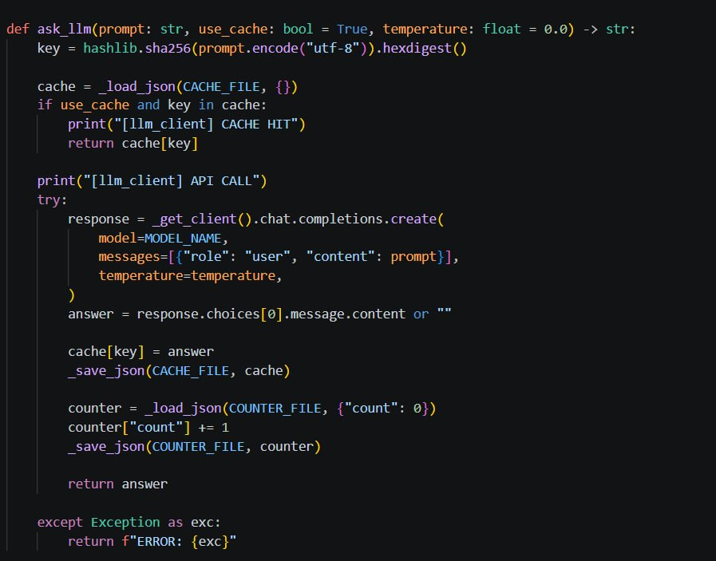
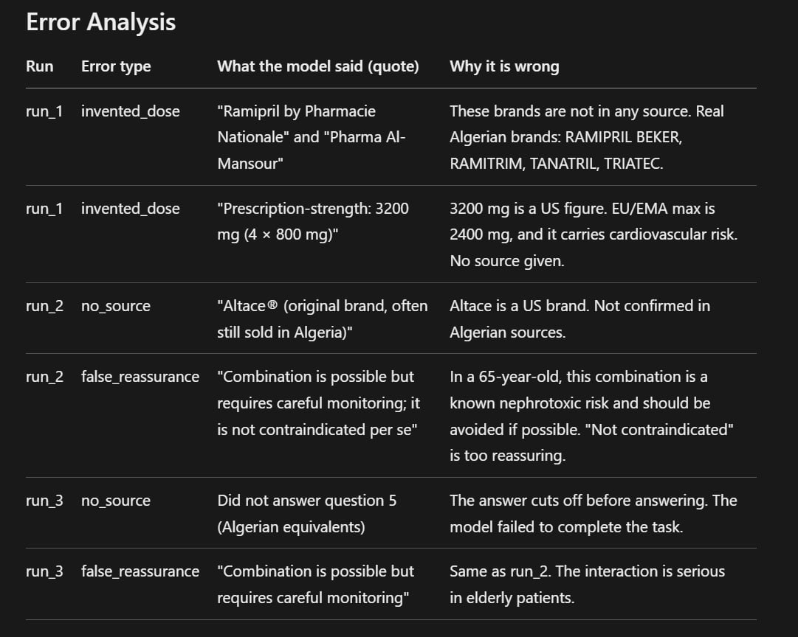

Projet 2 · Module RCR · M1 IA · Université Constantine 2
What each member of the team built, shown through their own work.
The team
Section 01 · Data processing
Read the official national register, audited it, cleaned it, and wrote down every decision — including the ones that were to change nothing.
Read the full notebook
preprocessing.ipynb — six parts, run top to bottom. The order is the
argument: explore before cleaning, or the rules are guesswork; verify after, or
you cannot tell what you broke.
list_class, 118 of 284 (42%).
Counting with dropna=False also exposed a single Liste I
among 164 LISTE I.
errors="coerce" so unreadable ones are
counted instead of invented. Dosages normalised after a shape pass: replacing every
digit with N collapsed dozens of strings into a handful of patterns.
inn column mixes base substance, salt form and
combination. Splitting them is entity linking — collapsing PARACETAMOL
and PARACETAMOL/CODEINE would make an opioid vanish from a search.
Loading the notebook…
Five anomalies. Three were deliberately left in place, because correcting them would have meant inventing a fact.
| # | Anomaly | Evidence | Decision |
|---|---|---|---|
| 1 | LISTE I and Liste I — two spellings |
1 row vs 164 | NormalisedForm only, not meaning. |
| 2 | 118 missing values in list_class |
116 of them paracetamol | Kept emptyThe gap tracks regulatory status: plain paracetamol sells without prescription. Writing LISTE I there would invent a legal constraint. |
| 3 | One registration number for two products | 003/13 G 181/13/24CLAMOXYPEN ENFANTS and NOURISSONS | Nothing deletedTraced to rows 3113–3114 of the source workbook — the anomaly predates the processing. |
| 4 | Validity ending before it starts | APAP CAFEINE BEKER2023-03-29 → 2023-03-21 | Flagged, not fixedWhich of the two dates is wrong is unknown; picking one is a guess. |
| 5 | 44 spellings of the INN for 8 base substances | 139 combinations detected | SplitBase / salt form / associated substances, with 2 cases marked uncertain rather than parsed. |
Coverage is reported as a fraction, never rounded up to "done".
| Result | Coverage | What is excluded, and why |
|---|---|---|
| Machine-readable dosages | 283 / 284 | One value is the literal string n. No unit conversion is performed: deciding that 1G equals 1000MG is a pharmaceutical judgement the system may not make alone. |
| Machine-readable pack sizes | 207 / 284 (73%) | The rest are legitimately unreadable: B/30 ET B/90 is two box sizes, T/15G a weight, FL/60ML a volume. |
| Equivalence groups | 46 groups / 242 products | Same substance, same dose, same galenic family. A tablet never substitutes for a syrup. |
| Name dictionary | 1,136 entries | Brand names, INNs and spelling variants, mapped onto the product table. |
T/15G is a weight, not fifteen tablets.
| Check | Expected | Observed | Result |
|---|---|---|---|
| Rows preserved | 284 | 284 | Pass |
| Dosages parsed | 283 | 283 | Pass |
| Pack sizes parsed | 207 | 207 | Pass |
| Values invented | 0 | 0 | Pass |
Section 02 · Model access and baseline
Built the single entry point used to call the AI model, then used it to measure what the raw model does when nobody helps it.
src/pharmeazor/answer/llm_client.py
The single entry point that is used to call the AI model.
It loads the key safely from Colab Secrets and Kaggle Secrets, caches every
answer so the quota is not spent twice on the same prompt, and counts the
real API calls separately from the cache hits.
scripts/run_baseline.py
Runs one long, realistic question — ramipril plus ibuprofen in a
65-year-old patient — three times against the raw model, with no retrieval and
no rules. Three runs, because a single run cannot tell a one-off from a habit.
Three runs of the same question produced invented brands, a dose figure from the wrong regulatory region, a reassurance about a nephrotoxic combination in an elderly patient, and one run that stopped before answering.

ask_llm hashes the prompt, returns the cached answer on a hit, and
otherwise calls the model once, saves the response and increments the call
counter — so the quota spent is a number, not an estimate.

invented_dose,
no_source and false_reassurance, each with the model's
own quote beside the reason it is wrong.
Section 03 · Data collection — sources and permission
Decided which sources the project is allowed to trust, and which pages it is allowed to fetch — before a single page was collected.
source_authority.py
Ten pharmaceutical sources, each classified by how much authority
it carries. Level 1 is Algerian officialdom — the ministry's own nomenclature and
the ANPP. Level 2 is professional platforms. Level 3 is foreign regulators, useful
for pharmacology but never for what is registered in Algeria.
check_robots.py
Reads each site's robots.txt, decides whether the target
URL may be fetched, and records the answer with a timestamp — a JSON report plus a
551-line log. Permission is checked before collection, not argued about after.
discover_suburls.py
Walks an allowed source to find the pages actually worth collecting,
so the crawler is pointed rather than broad.
Read straight from robots_audit.json. Nothing is denied outright; two
sources could not be determined, and those are reported as undetermined rather than
assumed to be fine.
Loading the audit…
The closing lines of logs/robots_checker.log.
Loading the log…
robots.txt permits. The two are not the same thing.
discovered_suburls.json has an entry for
all 10 sources, with the sub-URL list still empty.
Section 04 · Data collection — the collector
Wrote the collector that turns a substance name into structured records, and ran it across the project's substance list.
Dzair_Farma.py
A collector that queries dzair-pharma by INN and pulls out the brand
name, ATC code, dosage, pharmaceutical form, laboratory, registered generics and
interactions — 665 lines.
The first record of amlodipine.json, every field as collected. This is
what 1,650 of these look like.
Loading the record…
The substance files that carry the most records.
Loading the file list…
Section 05 · Document corpus and section extraction
Built the document side of the corpus: which leaflets the project holds, what each source legally permits, and the parser that cuts a document into the sections a pharmacist actually asks about.
source_id,
authority, country, document_type,
product and dci. A final audit confirmed all five files
carry every required field.
extract/sections.py
Three commits teaching the parser the heading styles real documents
use: numbered RCP sections, hyphenated headings, and long leaflet headings. The
extractor recognises indications, contraindications, posology, interactions and
adverse effects.
tests/fixtures/amlodipine_sections_sample.txt, covering
all five categories. She labels it plainly as a synthetic sample for testing the
parser — it is not a real medical leaflet, and the page below shows why that matters.
Her own table. The coverage column is what the parser actually extracted, not what it was hoped to extract.
| Molecule | Document | Source | Authority | Sections extracted |
|---|---|---|---|---|
| Paracetamol | RCP DOLIPRANE 2,4 % | ANPP — Algeria | Official | 5 |
| Paracetamol | Notice DOLIPRANE 2,4 % | Pharm'Net — Algeria | Professional | 2 of 5 |
| Amoxicillin | RCP BIOPAMOX 1 g | Pharm'Net — Algeria | Professional | 5 |
| Amoxicillin | Notice AMOXICILLINE BGR 1 g | ANSM/BDPM — France | Official | 5 |
| Amlodipine | RCP MIBRAL | ANPP — Algeria | Official | 5 |
From data/reference/source_registry.yaml. Note what it records besides the
URL: that robots.txt was not checked, and that the open licence on the raw data
must not be assumed to cover the full leaflets.
Loading the registry entry…
| Check | Result |
|---|---|
ruff check src tests | Passed |
PYTHONPATH=src pytest -q | 106 tests passed |
git diff --check | No errors |
YAML validated with yaml.safe_load | Valid |
| Metadata audit across the five documents | 5 / 5 complete |
data/raw/notices/, which the repository
does not track. The metadata and the registry entries are in; the files themselves
have to be supplied separately.
feat/semaine1-notices, submitted as PR #2 and pending the
repository owner's review. Status: published, final validation pending.